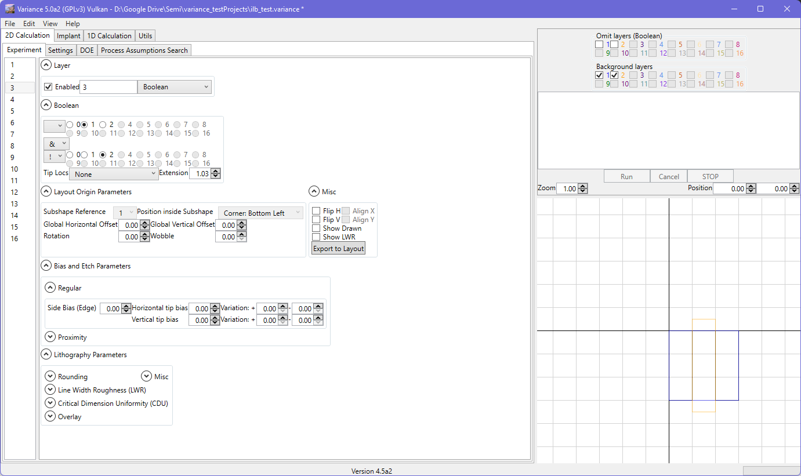
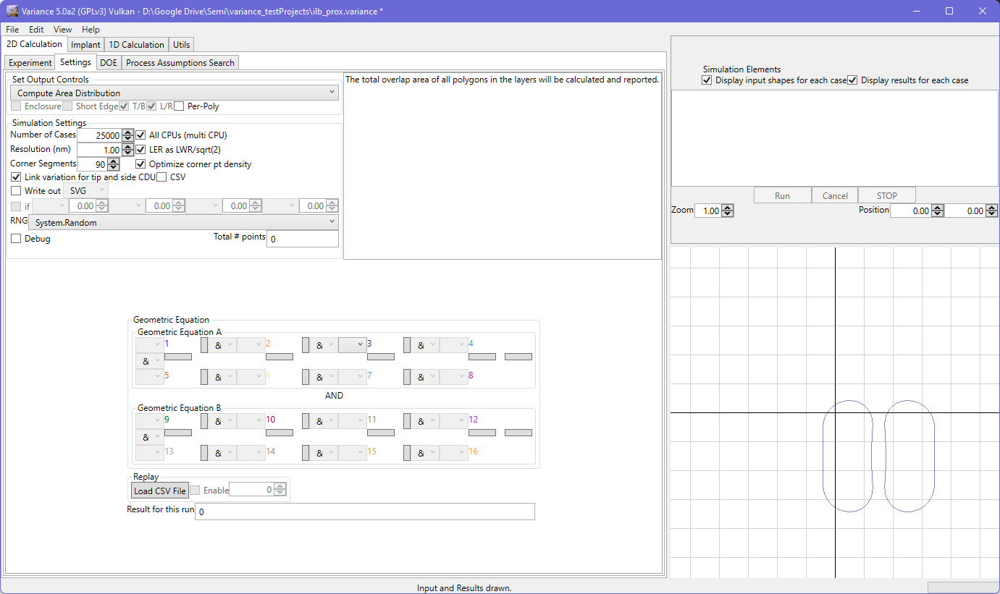

Boolean
In Boolean mode, you can set up an arbitrary Boolean equation from two active layers. The input layers include variations during simulation, and the output of the Boolean will see its own variations applied. An example scenario would be the reproduction of a spacer deposition pitch effect on a grating that has been processed with a cut mask. You could define the grating in layer 1, and the cut mask in layer 2. Layer 3 could then be (layer 1 NOT layer 2), and you could then apply the proximity biasing for the spacer deposition in layer 3.
Some notes:
- Layers feeding a Boolean need to be enabled.
- LWR/LER from input layers is not previewed in the Boolean layer unless 'show' is set on the input layer(s). This allows for respective contributions to be configured and visualized.
- There are a number of complex scenarios that arise with Booleans, including limitations on contouring the solution. An overview is provided here.

The resulting geometry is available for contouring as usual. Note that the contouring pipeline is the same as for geoCore contouring, with the same limitations regarding orthogonal shapes for biasing of tips. Proximity biasing, etc. are all fully supported.
Layers that are enabled and referenced in Booleans can, and usually should, be omitted from the simulation. This is configured using the checkboxes.
